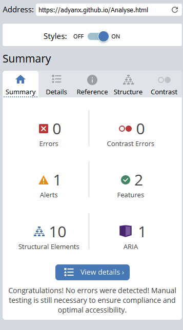
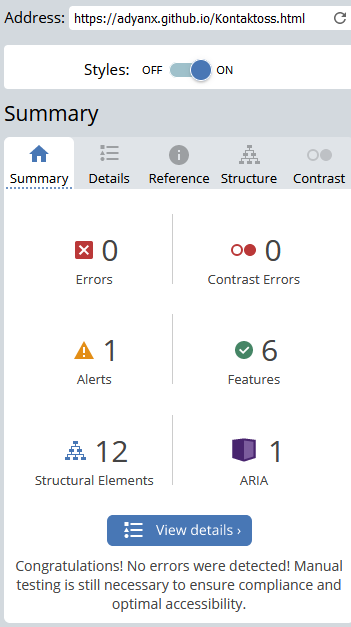

Analyse
Jeg har selv valgt problemer fra lighthouse og WAVE som jeg måtte utføre og løse slik at jeg kan få 100/grønt på alt. Jeg har først startet med å sjekke lighthouse og finne problemer som kan svekke nettsiden.
Hovednettside

I dette bildet som blir vist er det ganske åpenbart at jeg har klart å følge performansen, Accessibility og best practices. Dette er altså lighthouse rapporten på hoved siden til nettstedet, og her kan du se at jeg har 100% på alt, med tanke på at jeg har tenkt på nettsidens rendering tid og bilde performansen. Her har jeg fra før av (før jeg brukte lighthouse) f.eks. gjort alle bildene mine til riktig format, altså WEBP derfor ser vi ikke et slikt problem i nettsiden. Men som du kan se så har jeg ett problem angående SEO det har jeg løst. Her så sto det at META deskripsjon manglet og jeg har deretter satt inn en Meta-deskripsjon i HEADER for å så få utført denne handlingen slik at jeg kan få 100% på alt. Som du kan se på bildet under.
CMS nettsiden
Under ser du resultatet av CMS nettsiden ettersom det eneste jeg måtte endre var SEO på hovednettsiden, så var innholdsssidene helt like med tanke på lighthouse sine kriterier
Analyse nettsiden
Under ser du resultatet av Analyse nettsiden ettersom det eneste jeg måtte endre var SEO på hovednettsiden, så var innholdsssidene helt like med tanke på lighthouse sine kriterier
Kontakt oss nettsiden
Under ser du resultatet av kontakt oss nettsiden. som du kan se er best practices på 83. grunnen til dette er google API. har lagt til et kart fra google som da svekker nettsiden sin best practise. dette er fiksed ved å gå i inkognito siden da prøver ikke api å komme seg inn, men i ikke inkognito kommer de inn og spør hele tiden derfor svekker det best practises.
Universell utforming og Søkemotoroptimalisering nettsiden
Under ser du resultatet av Universell utforming og Søkemotoroptimalisering nettsiden ettersom det eneste jeg måtte endre var SEO på hovednettsiden, så var innholdsssidene helt like med tanke på lighthouse sine kriterier
Siden jeg ikke hadde så mange problemer med lighthouse valge jeg å isteden for gå etter WAVE sin webaim. Her fokuserte -jeg KUN på contrast error og errors. Noe som det ikke er noe av.
Her ser du at jeg ikke har noen errors på nettsiden og heller ingen contrast errors. bildet over er altså fra hovednettsiden og under kommer resten.
UU VS SEO nettsiden
Her ser du at jeg ikke har noen errors på nettsiden og heller ingen contrast errors.

CMS nettsiden
Her ser du at jeg ikke har noen errors på nettsiden og heller ingen contrast errors.

Analyse nettsiden
Her ser du at jeg ikke har noen errors på nettsiden og heller ingen contrast errors.
Kontakt oss nettsiden
Her ser du at jeg ikke har noen errors på nettsiden og heller ingen contrast errors.
.png)